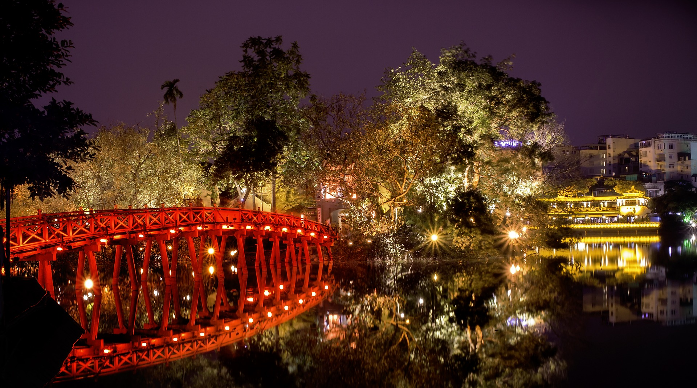

옛 베트남 공화국의 수도이자, 현재는 베트남의 최대도시 및 베트남 경제의 중심지. 현재 베트남의 수도는 하노이지만, 호찌민이 경제적으로는 하노이보다 부강하다.[3] 2013년 8월 베트남 노동신문 통계에 따르면 하노이의 연간 1인당 GDP는 약 1,900만 동인 반면, 호찌민 시는 약 3,600만 동으로 대략 1.8배 정도 차이가 난다. 오히려 식료품 물가는 하노이 쪽이 좀 더 비싼 편이라고 하지만 지금은 오히려 높은 소득 수준으로 호치민 쪽이 더 비싸다. 호치민의 1인당 gdp는 거의 7,000달러를 찍고 있는 중이고 하노이는 4천 정도이다.
